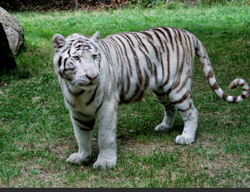
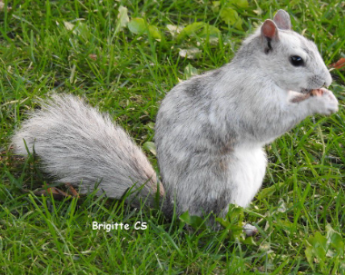
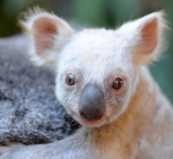
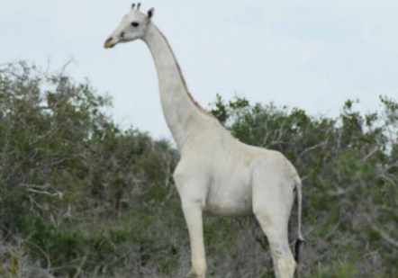

Parce qu'ils ne possèdent pas en eux la substance qui colore leur pelage, certains animaux sont tous blancs
 Il faut pas confondre les animaux albinos et ceux qui sont blanc naturellement, comme l'ours polaire. Habituellement, ce tigre et cet écureuil ne sont pas blanc
 Ces animaux sont plus en danger que les autres, car ils ont plus de mal à passer inaperçus dans la nature, comme ce koala et cette girafe. De plus, ils sont très sensibles aux rayons du soleil